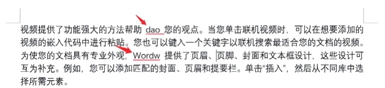
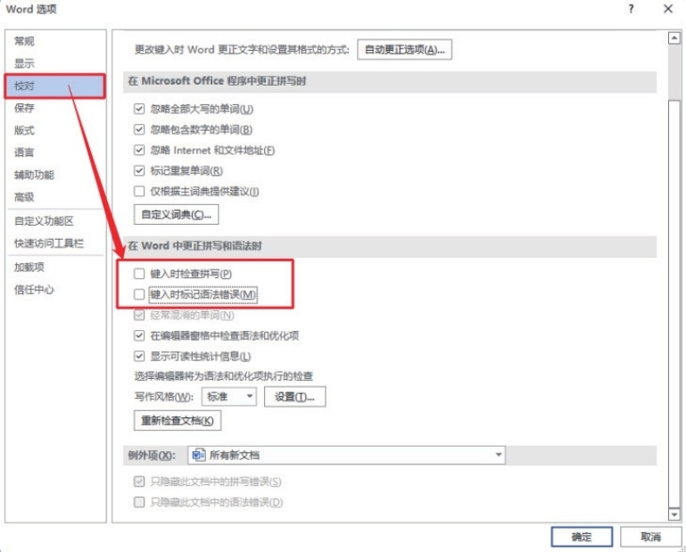

首页 > 编程笔记
Word去除文字下方的红色波浪线
你肯定遇到过在 Word 中有些软件认为的错误文字下方显示的波浪线。如果不需要软件帮你纠错，看起来就会感觉比较闹心。
Office 毕竟是国外的软件，汉语的很多使用习惯开发者并不了解，导致出现一些不必要的提示错误的波浪线。如果希望隐藏这些波浪线，可以这样操作。
此时，Word 文稿中将不会再出现红色波浪线提示了。

Office 毕竟是国外的软件，汉语的很多使用习惯开发者并不了解，导致出现一些不必要的提示错误的波浪线。如果希望隐藏这些波浪线，可以这样操作。
第1步
执行“文件 --> 选项”命令。第2步
在弹出的“Word选项”对话框中，进入“校对”选项卡，取消选中“键入时检查拼写”和“键入时标记语法错误”复选框，单击“确定”按钮。

此时，Word 文稿中将不会再出现红色波浪线提示了。
关注公众号「站长严长生」，在手机上阅读所有教程，随时随地都能学习。内含一款搜索神器，免费下载全网书籍和视频。

微信扫码关注公众号